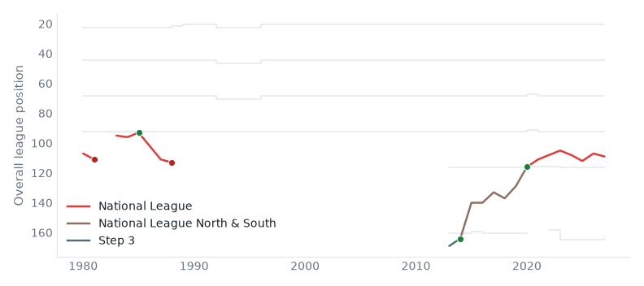

Who each club is fighting for. 16 September 2026.
How many more people each club would draw restored to its highest recorded level, with every other club left where it is.
| Club | Ceiling | Now | Restored | × | |
|---|---|---|---|---|---|
| 1 | Oldham Athletic League Two | Premier League | 151,215 | 1,012,235 | 6.7 |
| 2 | Notts County League One | Premier League | 181,617 | 947,649 | 5.2 |
| 3 | Leyton Orient League One | Premier League | 312,329 | 1,594,898 | 5.1 |
| 4 | Northampton Town League Two | Premier League | 227,391 | 1,008,447 | 4.4 |
| 5 | Scunthorpe United National League | Championship | 71,667 | 308,089 | 4.3 |
| 6 | Sheffield Wednesday League One | Premier League | 238,986 | 989,030 | 4.1 |
| 7 | Yeovil Town National League | Championship | 98,058 | 405,322 | 4.1 |
| 8 | Wigan Athletic League One | Premier League | 231,354 | 910,934 | 3.9 |
| 9 | Swindon Town League Two | Premier League | 254,926 | 963,763 | 3.8 |
| 10 | Huddersfield Town League One | Premier League | 271,392 | 1,007,236 | 3.7 |
Wealdstone play in the National League, at Grosvenor Vale.
The catchment model gives them 100,724 people to draw on, the 93rd largest catchment of the 112 clubs in the top five divisions; by league position they are 105th.
The nearest club is Uxbridge (tier 7), 2.5 miles away.
82% of the people nearest to them go elsewhere.
Net household income in their catchment is £51,136, among the highest in the country.

Modelled, not counted: population is split across every club by distance and by level, not assigned to the nearest one. How catchment is measured · catchment · contested.
Built from the English football database, tiers 1–5 from 1958/59. Results from football-data.co.uk. Archived copy.